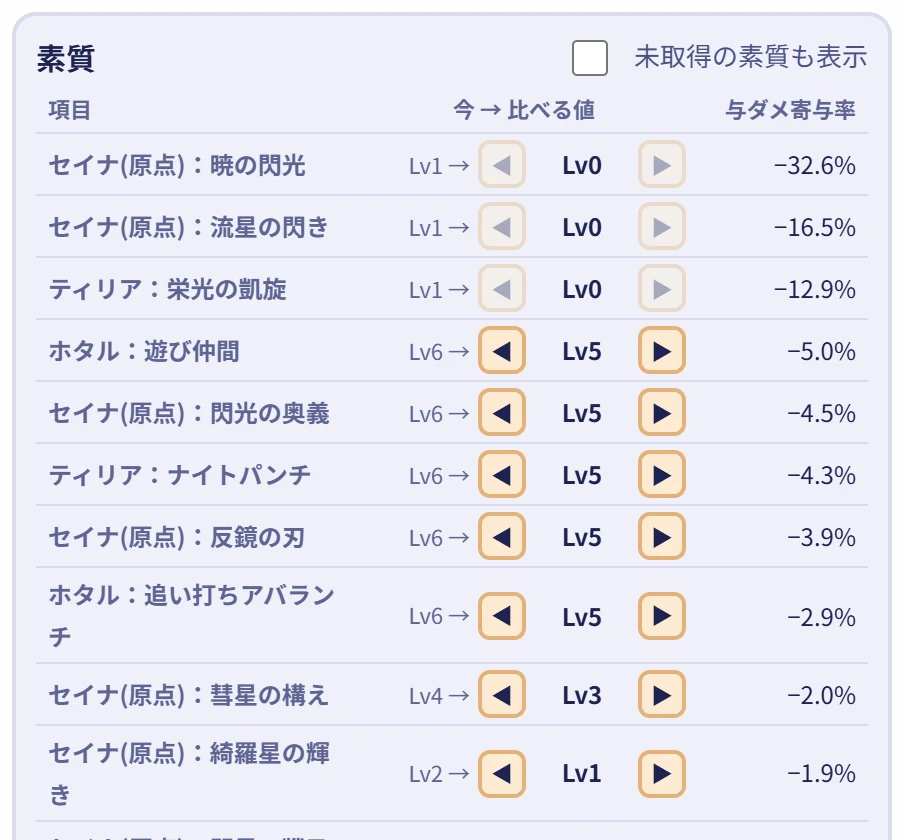

1
素質・徽章・ロスレコで、どれだけダメージが変わるか知りたいとき
巡遊者の計算ノート巡遊者3人の編成で、通常攻撃・スキル・必殺技・印のダメージと、倍率の内訳を出します。「この素質のLvを上げたら何%伸びるか」「この徽章を外したら何%減るか」も比べられます。
ダメージを計算する
FOR STELLA SORA
ステラソラのダメージを計算して、素質ビルドを探せる、非公式のファンメイドツール集です。
HOW TO USE
巡遊者3人の編成で、通常攻撃・スキル・必殺技・印のダメージと、倍率の内訳を出します。「この素質のLvを上げたら何%伸びるか」「この徽章を外したら何%減るか」も比べられます。
ダメージを計算する
計算したビルドは、短いURLで共有できます。URLを開いた人は、同じ入力の状態から見られます。Xへの投稿や、ゲームで使える素質プリセットのコードも作れます。
計算ノートを開く
ほかの人が投稿した素質ビルドを、巡遊者や編成から探せます。気に入ったビルドのコードをコピーして、ゲームの「素質プリセット」に入れれば、星ノ塔で「あといくつ」集めればいいかが出ます。
ビルドを探す
ゲームで出した素質プリセットの共有コードを貼るだけで、編成と素質Lvを読み取って投稿できます。ログインは要りません。
ビルドを投稿する